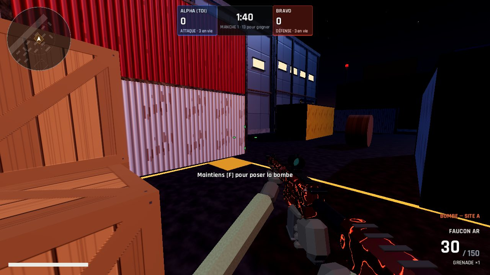
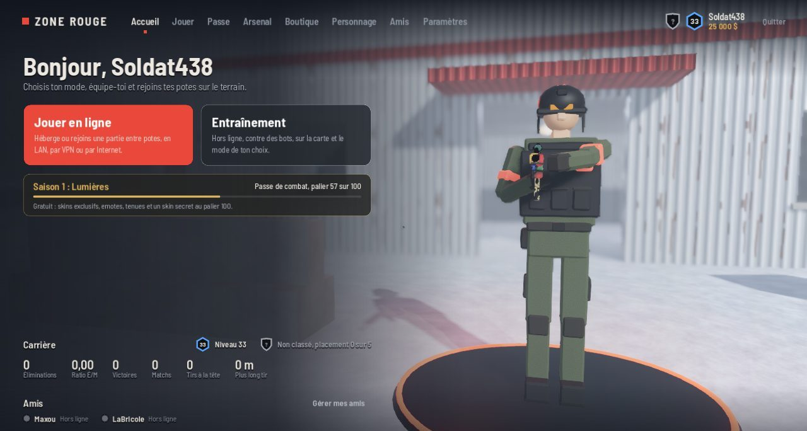
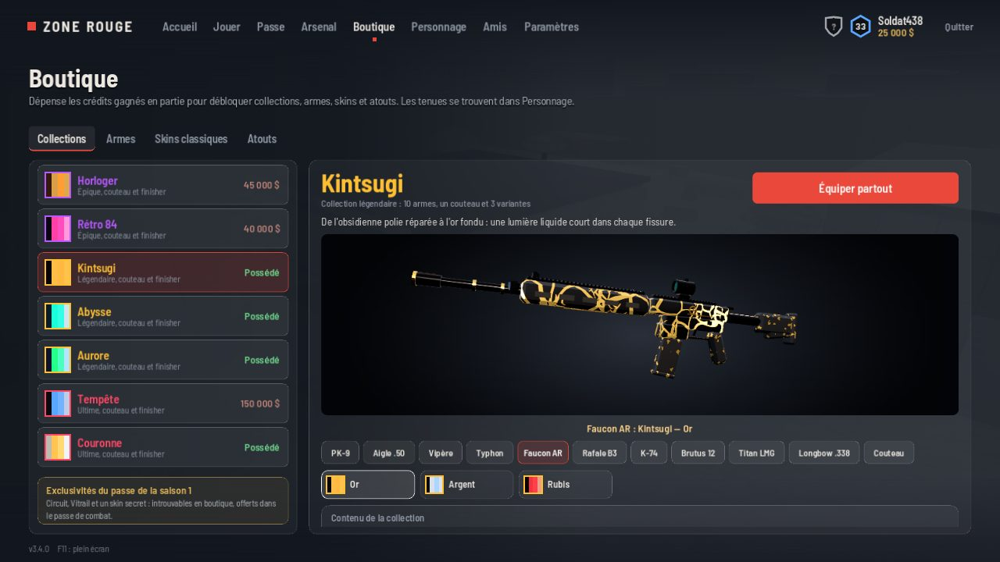
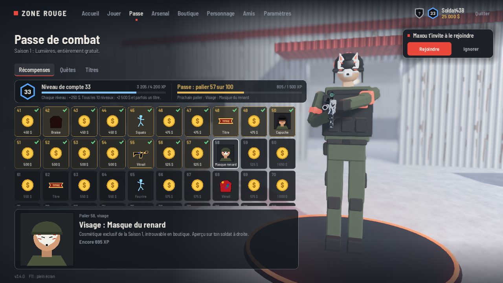
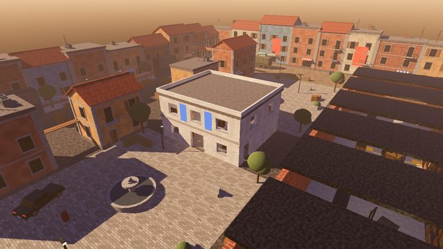
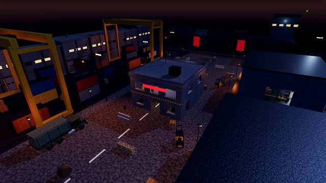
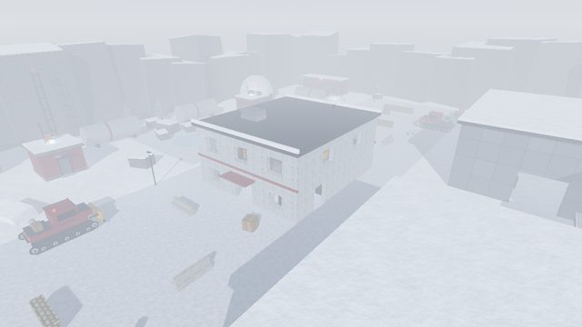

Match à mort par équipe
ALPHA CONTRE BRAVO · RÉAPPARITIONS
Atteignez l'objectif d'éliminations avant l'autre équipe, ou menez au score à la fin du temps.
Le FPS entre potes. Héberge une partie en un clic, en réseau local ou par Internet, et règle tes comptes en match à mort, en mêlée ou au désamorçage.
Choisis le mode, la carte et le nombre de bots. Tes potes voient ta partie apparaître dans leur liste et te rejoignent, même en cours de route.
Atteignez l'objectif d'éliminations avant l'autre équipe, ou menez au score à la fin du temps.
Pas d'alliés, pas d'excuses. Le premier à l'objectif gagne, le podium touche une prime.
Pose la bombe sur A ou B, ou désamorce-la à temps. Une seule vie par manche, mi-temps à 12.
Collections de skins avec couteau et finisher, soldat personnalisable, emotes, quêtes et mode classé avec placements.




Par défaut la carte est tirée au sort à chaque partie, jamais deux fois de suite la même. L'hôte peut aussi en imposer une.

CrépusculeRuelles méditerranéennes au coucher du soleil.

NuitDocks, conteneurs et grues sous les projecteurs.

NeigeBase scientifique isolée dans le blizzard.
Chaque version s'installe toute seule au lancement. Voici ce qui a changé depuis la sortie.
Menus redessinés, plus clairs et plus épurés, et un réseau plus fiable : plus de joueur qui en voit un autre sans être vu.
Le jeu sort sous Linux, en multijoueur avec les joueurs Windows.
Écrans de chargement avec astuces, et vue d'ensemble de la carte avant la première manche du Désamorçage.
Mises à jour automatiques : plus besoin de retélécharger le jeu.
Jeu à la manette (Xbox, PlayStation…), menus compris.
Saison 1 « Lumières » : passe de combat gratuit, quêtes, mode classé et roulette des cartes.
Gratuit, sans compte. Les joueurs Windows et Linux se retrouvent dans les mêmes parties, et le jeu se met à jour tout seul.
ZoneRouge_Windows_v3.5.0.zipZoneRouge.exe et choisis ton pseudoZoneRouge_Linux_v3.5.0.zip./ZoneRouge.x86_64 (si besoin chmod +x)Si Windows affiche « Windows a protégé votre ordinateur » (le jeu n'est pas signé), clique sur « Informations complémentaires » puis « Exécuter quand même ».
Même box ou même Wi-Fi : la partie apparaît toute seule. Par Internet, passez par un VPN de jeu gratuit (Radmin VPN, ZeroTier, Tailscale) ou ouvrez les ports chez l'hôte.